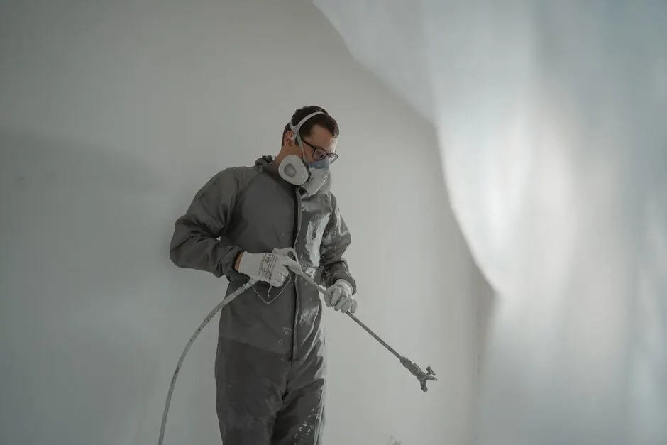

Comprehensive mold assessment in Spokane for your peace of mind.
Mold Testing Spokane WA for a Safe Home
Mold Testing Spokane WA is a critical service that identifies mold presence and potential health risks. Our mold assessment in Spokane ensures your home is safe and healthy, especially after water damage or flooding.
Live dispatcherUpfront optionsBacked workmanship
What's included
What's Included in Mold Testing Spokane WA
Our Mold Testing service includes a comprehensive assessment of your property for mold presence, air quality testing, and a detailed report outlining findings and recommendations.
Visual Inspection
A thorough visual inspection of your property to identify potential mold growth areas.
Air Sampling
Collection of air samples to analyze mold spore concentrations in your home.
Moisture Assessment
Using moisture meters to detect areas of excess moisture that could promote mold growth.
Detailed Report
A comprehensive report with findings, including mold types and recommendations for remediation.
Service overview
Understanding Mold Testing Spokane WA
Mold Testing Spokane WA is a specialized service that detects and quantifies mold spores in your environment. Utilizing advanced tools like moisture meters and air sampling kits, our team conducts thorough assessments to determine the presence and type of mold, which is essential for effective remediation.
Local Spokane customers need Mold Testing due to the region's susceptibility to moisture-related issues, especially after heavy rains or flooding. Best Mold Testing in Spokane ensures that your home is free from mold growth, which can lead to health issues. Our mold testing services Spokane are designed to identify hidden mold problems swiftly.

How we workWe verify the cause, compare realistic options, and confirm the repair before we leave.
The service timeline
Mold Testing Process Explained
The process flexes to the condition, but these checkpoints keep decisions clear.
Initial Consultation
We start with a consultation to understand your concerns and identify potential mold problem areas. This step typically takes about 30 minutes.
Site Inspection
Our team conducts a thorough inspection of your property using infrared cameras and moisture meters to pinpoint areas of concern. This usually takes 1-2 hours.
Air Sampling
We perform air sampling to measure the concentration of mold spores in the air. This process helps determine the extent of the mold problem and takes about 1 hour.
Lab Analysis
Samples are sent to a certified lab for analysis. Results are typically available within 48 hours, providing detailed information on mold types and concentrations.
Detailed Report
We provide a comprehensive report with findings and recommendations for remediation. This includes guidance on how to address any identified mold issues.
Tools & methods
Tools and Methods for Mold Testing
Purpose-built equipment, used by trained technicians, so the job is done accurately the first time.
Moisture Meter
Used to detect moisture levels in building materials, indicating potential mold growth areas.
Infrared Camera
Helps identify hidden moisture behind walls and ceilings, crucial for thorough mold inspection.
Air Sampling Kit
Collects air samples to analyze mold spore concentrations, providing insight into air quality.
HEPA Vacuum
Used to safely remove mold spores from surfaces during the testing process.
Use cases
When to Use Mold Testing Spokane WA
These examples show how the service framework adapts rather than forcing every call through one repair.
New Home Purchase
A family purchased an older home but was concerned about potential mold issues. → Comprehensive Mold Testing revealed no mold, giving them confidence in their purchase.
Routine Mold Assessment
A homeowner suspected mold due to allergies but had no visible signs. → Mold Testing confirmed elevated mold spore levels, leading to effective remediation.
Problems we solve
Common Problems Solved by Mold Testing
Mold Testing Spokane WA addresses several issues that can affect your health and home.
Undetected mold growth in your home.
Our Mold Testing services identify hidden mold, allowing for timely remediation to protect your health.
Water damage leading to mold.
We provide Mold Testing Spokane WA to assess the extent of mold growth after water damage, ensuring effective solutions.
Poor indoor air quality.
Our mold assessment in Spokane identifies air quality issues related to mold, providing actionable insights for improvement.
Pricing process
Mold Testing Spokane WA Pricing
$180 - $450 depending on scope
Property Size
Larger properties may require more time and resources for thorough testing, increasing costs.
Number of Samples
More air and surface samples lead to higher lab analysis fees, affecting overall pricing.
Accessibility
Difficult-to-reach areas may require specialized equipment or additional labor, impacting costs.
Customer reviews
What Our Customers Say
★★★★★
“I had a great experience with Spokane Mold Experts. Their Mold Testing was thorough, and they provided clear recommendations. Highly recommend!”
★★★★★
“The team was professional and efficient. The Mold Testing process was quick, and they helped me understand the results clearly.”
★★★★★
“I was impressed with their prompt service and thoroughness. The Mold Testing gave me peace of mind about my home's air quality.”

What is included in a Mold Testing service in Spokane?
A Mold Testing service in Spokane includes a thorough inspection, air sampling, lab analysis, and a detailed report with recommendations for remediation.
How much does Mold Testing cost in Spokane?
Mold Testing costs in Spokane typically range from $180 to $450, depending on the size of the property and the extent of testing required.
Why is Mold Testing important after flooding in Spokane?
Mold Testing is crucial after flooding in Spokane because excess moisture creates ideal conditions for mold growth, which can lead to health issues and property damage.
How long does Mold Testing take in Spokane?
The Mold Testing process in Spokane usually takes about 2-4 hours, including inspection and sampling, with lab results available within 48 hours.
Related services
Related Services

Mold Inspection
Mold Inspection is often the first step in identifying mold problems. It assesses visible mold and moisture issues, providing a basis for Mold Testing.
Mold Remediation
Mold Remediation follows testing and inspection, effectively removing mold and preventing future growth, ensuring a safe living environment.
Water Damage Restoration
Water Damage Restoration services are essential after flooding to prevent mold growth. They address moisture issues that can lead to mold problems.Ready when you are
Get Expert Mold Testing Spokane WA Today!
Contact us for reliable Mold Testing services and ensure your home is safe from mold. Our experts are ready to assist you promptly.
Talk with the local team
Request Mold Testing
We invite you to reach out for any mold-related concerns. Our team is available 24/7 to assist you with your needs.